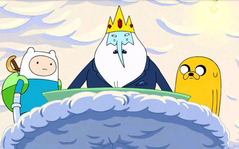

About Ice King
We are introduced to Ice King as the main antagonist of Adventure Time. He used his frosty powers, granted by his crown, to kidnap princesses with the goal of forcing them to marry him. Over time we come to learn more about Ice King, including his origins as a scientist named Simon Petrikov and how he became the ruler of the Ice Kingdom.
Ice King pictured above with Finn & Jake
Characteristics
- Wears a powerful crown that grants him ice-related abilities
- Lives in the Ice Kingdom with Gunter and many, many penguins
- Writes Fionna & Cake fanfiction inspired by his "friendship" with Finn & Jake
Ice King pictured above with Finn & Jake again
Ice King's "Friends"
Despite starting off as a kidnapper, Ice King actually struggles to make friends and meaningful relationships throughout the series. As Simon, he was previously engaged to another scientist named Betty and took Marceline under his wing after the Mushroom War when she was young. Click on the links below to read more about his relationships.